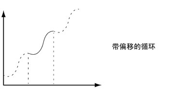
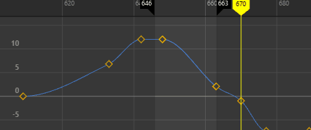

“曲线”(Curves)菜单项可处理整个动画曲线。
动画曲线将推到该曲线第一个关键帧和最后一个关键帧的外部。除非将前方和后方无限控制设置为任意非恒定值，否则第一个关键帧之前和最后一个关键帧之后的“曲线”(Curves)将会平坦曲线（值不会随时间更改）。可以使用这些选项来自动生成特定类型的重复动画。
-
如果要创建重复或循环性质的可编辑动画，可以在启用无限后烘焙通道。
- 某些过滤器不适用于“设置受驱动关键帧”(Set Driven Keys)或非基于时间的曲线。在下面的过滤器信息中会提及此限制（如果适用）。
- “前方无限”(Pre Infinity)和“后方无限”(Post Infinity)
-
“前方”(Pre)和“后方”(Post)设置定义动画曲线在该曲线的第一个关键帧之前和之后的行为。
-
- 循环(Cycle)
-
“循环”(Cycle)设置将动画曲线作为副本无限重复。
- 带偏移的循环(Cycle with Offset)
-
“带偏移的循环”(Cycle with Offset)设置将无限重复动画曲线，除非将循环曲线的最后一个关键帧的值附加到原始曲线的第一个关键帧的值。
 - 往返(Oscillate)
-
“往返”(Oscillate)设置通过在每次循环中反转动画曲线的值和形状来重复该曲线，从而创建向后和向前替代的效果。
- 线性(Linear)
-
“线性”(Linear)设置将使用第一个关键帧的切线信息外推其值。它可无限投影线性曲线。
- 恒定(Constant)
-
“恒定”(Constant)设置将保持结束关键帧的值。这是 Maya 中动画曲线的默认设置。
- 隔离曲线(Isolate Curve)
-
启用后，仅选定曲线会显示在图表视图区域中，所有其他曲线均会隐藏。
例如，若要同时仅关注多个对象的“平移 Y”曲线，请在图表视图中选择“平移 Y”曲线或在“通道盒”(Channel Box)中选择“平移 Y”通道，然后启用“隔离曲线”(Isolate Curve)。所有其他曲线均会隐藏，因此您可以轻松地只编辑“平移 Y”曲线。
- 烘焙通道(Bake Channel)
-
该操作将使用影响其特性的输入节点来计算属性的新动画曲线。这与“关键帧”(Key)菜单中的“烘焙动画”(Bake Animation)操作不同。如果需要执行以下操作，则该操作十分有用：
- 编辑单个动画曲线，而非影响单个属性行为的所有起作用的属性。
例如，受到受驱动关键帧或“表达式”(Expression)影响的对象。
- 将关键帧添加到现有曲线
注： “烘焙通道”(Bake Channel)仅对可显式解算的动画进行操作。“反向运动学”(Inverse Kinematics)系统、“动力学”(Dynamics)和某些“表达式”(Expressions)无法使用“烘焙通道”(Bake Channel)进行操作。
若要从这些动画类型创建动画曲线，请使用“关键帧”(Key)菜单中的“烘焙动画”(Bake Animation)。
选择“烘焙通道”(Bake Channel) >
 以打开烘焙通道选项(Bake Channel Options)。
以打开烘焙通道选项(Bake Channel Options)。
- 编辑单个动画曲线，而非影响单个属性行为的所有起作用的属性。
- 禁用通道(Mute Channel)
-
禁用选定通道。
“禁用”(Mute)显示在大纲视图中当前动画通道的名称下方，并且禁用的动画曲线在图表视图中显示为虚线。另请参见禁用通道。
- 取消禁用通道(Unmute Channel)
-
取消禁用选定的（禁用的）通道。另请参见禁用通道。
- 锁定通道(Lock Channel)/解除锁定通道(Unlock Channel)
- 冻结或解冻通道以防止其发生更改。分别使用热键 H 或 J 锁定或解锁通道。

- 固定通道(Pin Channel)/取消固定通道(Unpin Channel)
-
固定或取消固定选定通道，以便其曲线显示在图表区域中，而不管选择的是什么。另请参见固定通道。
- 平滑过滤器(Butterworth)(Smooth Filter (Butterworth))
-
注： 先前版本 Maya 将此过滤器称为“Butterworth 过滤器”(Butterworth Filter)。为明确起见，已将其重命名为“平滑过滤器(Butterworth)”(Smooth Filter (Butterworth))。
“平滑过滤器(Butterworth)”(Smooth Filter (Butterworth))使用智能低通平滑来平均关键帧。它是一种频率过滤器，适用于受噪波影响的曲线。
选择“平滑过滤器(Butterworth)”(Smooth Filter (Butterworth)) > 以打开平滑过滤器 (Butterworth) 选项(Smooth Filter (Butterworth) Options)。
注： 此过滤器类似于 MotionBuilder 中的 Butterworth 过滤器，但是存在差异，例如，MotionBuilder 过滤器尝试匹配切线以保持其形状，而 Maya 只比较误差容差以确保获得可预测的结果。“平滑过滤器(Butterworth)”(Smooth Filter (Butterworth))可从数据中去除噪波，而不会影响曲线的最小值或最大值。通过这种方式，“平滑过滤器(Butterworth)”(Smooth Filter (Butterworth))可避免在过滤运动捕捉数据时可能发生的“过平均”问题。
- Euler 过滤器(Euler Filter)
-
请参见 Euler 角度过滤。
- 关键帧减少器过滤器(Key Reducer Filter)
- “关键帧减少器过滤器”(Key Reducer Filter)使用与“平滑过滤器(Butterworth)”(Smooth Filter (Butterworth))不同的算法，并通过移除曲线上不必要的关键帧来减少关键帧的数量。
- 也可以使用“关键帧减少器”(Key Reducer)雕刻笔刷，仅将曲线的各个部分（而不是全部）作为目标。
- 选择“关键帧减少器过滤器”(Key Reducer Filter) > 以打开关键帧减少器过滤器选项(Key Reducer Filter Options)。
注： 此过滤器类似于 MotionBuilder 中的对应过滤器，但是存在差异，例如，MotionBuilder 过滤器尝试匹配切线以保持其形状，而 Maya 只比较误差容差，以确保获得可预测的结果。
- 平滑过滤器(高斯)(Smooth Filter (Gaussian))
-
“平滑过滤器(高斯)”(Smooth Filter (Gaussian))类似于 Autodesk MotionBuilder 中的平滑过滤器。可使用“平滑过滤器(高斯)”(Smooth Filter (Gaussian))来应用线性过滤以减少关键帧通道上的噪波。
平滑（高斯）过滤器应用于一个通道
-
选择“平滑过滤器(高斯)”(Smooth Filter (Gaussian)) > 以打开“平滑过滤器(高斯)选项”(Smooth Filter (Gaussian) Options)，您可以在其中的“时间范围”(Time Range)选项中指定要过滤的区域。
- 峰移除过滤器(Peak Removal Filter)
-
“峰移除过滤器”(Peak Removal Filter)使用立方关键帧（具有基于相邻关键帧的平均值）替换动画数据中不需要的峰和钉形。使用“峰移除过滤器”(Peak Removal Filter)可以清理或修改运动捕捉数据，尤其在使用磁性捕捉系统的情况下，这些系统会生成由被遮挡的标记导致的局部扭曲，这需要您手动调整捕捉的数据。
峰移除过滤器(Peak Removal Filter)：预览“全部”(All)和“选定”(Selected)过滤器选项效果
-
选择“峰移除过滤器”(Peak Removal Filter) >
以打开峰移除过滤器选项(Peak Removal Filter Options)，您可以在其中的“时间范围”(Time Range)选项中指定要过滤的区域：
-
时间范围(Time Range) 选择(Selection) 全部(All) 过滤选定对象动画的所有关键帧。 选择(Selection) 仅过滤选定区域内的关键帧。 开始/结束(Start/End) 时间滑块(Time Slider) 将过滤限制为当前时间滑块(Time Slider)上显示的关键帧。 注： 确保在视口中选择已设置动画的对象，否则将不显示关键帧供您进行过滤。 - 在应用过滤器之前，激活“预览”(Preview)选项以查看对动画进行过滤的效果。
- 关键帧同步过滤器(Key Sync Filter)
-
在一条曲线上设置一个关键帧，“关键帧同步过滤器”(Key Sync filter)可将一个关键帧添加到其他曲线
- 对于遇到的每个关键帧，将一个关键帧添加到所有曲线 (X, Y, Z)。例如，如果某对象在其 X 动画曲线上设置了关键帧，则同时在其 Y 和 Z 平移曲线上设置一个关键帧。这样，您可以同步对象的每条动画曲线上的所有关键帧。
- 选择“关键帧同步过滤器”(Key Sync filter) > 以打开关键帧同步过滤器选项(Key Sync filter Options)。
- 重新对曲线采样(Resample Curve)
-
重采样以均匀的间隔放置关键帧，从而形成周期性的帧速率。
若要对曲线重采样，请选择采样过滤器，它是一种定义如何对曲线中的关键帧重采样的算法。切线和曲线值将被忽略。过滤器将带有一致/非一致间隔关键帧的动画曲线转化为具有指定的一致间隔关键帧的曲线。
提示： 重采样过滤器旨在减少稠密数据曲线中的关键帧数。如果将其用于带有少量关键帧的曲线，可能不会产生期望的结果。选择“重新对曲线采样”(Resample Curve) >
以打开重新对曲线采样选项(Resample Curve Options)。
- 简化曲线(Simplify Curve)
-
使用该操作来移除无需描述动画曲线形状的关键帧。如果手动添加关键帧或执行“烘焙通道”(Bake Channel)等操作，可能会在动画曲线上累积过多的关键帧。您可能需要从动画曲线中移除关键帧，以降低图表复杂程度。此外，您可能还需要提供更大的跨度数，以便调整曲线切线。
-
选择“简化曲线”(Simplify Curve) >
以打开简化曲线选项(Simplify Curve options)。
- 钳制曲线(Clamp Curves)
-
使用“钳制曲线”(Clamp Curves)选项可使关键帧值限于上限值或下限值。

钳制上限和下限
-
选择“钳制曲线”(Clamp Curves) >
以打开钳制曲线选项(Clamp Curves Options)。
- 偏移曲线(Offset Curves)
-
使用“偏移曲线”(Offset Curves)选项可按特定量或帧编号移动选定曲线。
偏移曲线(Offset Curves)：“全部”(All)和“播放”(Playback)范围
-
选择“偏移曲线”(Offset Curves) >
以打开“偏移曲线选项”(Offset Curves Options)。
- 更改旋转插值(Change Rotation Interp)
-
使用该菜单可更改现有曲线的旋转插值类型。
只能对在所有三个通道（rotateX、rotateY、rotateZ）都有关键帧的旋转通道更改旋转插值类型。此外，由于 rotateX、rotateY 和 rotateZ 通道始终共享相同的插值类型，更改单个通道（如 rotateX）的插值时会自动更改其他（rotateY 和 rotateZ）插值。
有关旋转插值的详细信息，请参见 Maya 中的动画旋转。
-
- 独立 Euler(Independent Euler)
-
使用三个独立的角度（表示围绕 X、Y 和 Z 轴旋转）、顺序或旋转来计算旋转。在该模式中，为给定的节点定义旋转的曲线以 Euler 角度表示，插值在 Euler 空间，内的每条曲线中独立执行，且根据您的判断可以使用关键帧，这些关键帧与该节点中的其他同级旋转曲线不同步。此外，还可以为单个旋转坐标设置动画。这是默认设置。
- 同步 Euler(Synchronized Euler)
-
在彼此锁定、但在 Euler 空间中执行关键帧之间使用插值的同级曲线中创建曲线。
它对于保持旋转关键帧同步十分有用，因为旋转是三个单独旋转值的合成。仅删除曲线中的一个关键帧时，有可能会在插值中产生明显的异常效果。
- 四元数球面线性插值(Quaternion Slerp)
-
插值是使用球形线性插值计算得出的，并且与输入曲线的切线无关。
- 四元数立方(Quaternion Cubic)
-
插值是使用四元数立方插值（平方）计算得出的，并且与输入曲线的切线无关。
- 四元数切线从属(Quaternion Tangent Dependent)
-
插值是使用基于输入曲线切线的四元数插值计算得出的。例如，如果切线为线性，则 Maya 将使用球形线性插值（球面线性插值）。此外，如果切线已钳制，则 Maya 将使用立方插值（平方）。
- 属性总表(Spreadsheet)
-
可用于在“属性编辑器”(Attribute Editor)中编辑采用电子表格格式的选定动画曲线的值和属性。
- 缓冲区曲线(Buffer Curve)
-
从下列选项中进行选择：
-
- 快照(Snapshot)
-
拍摄曲线的快照。使用“交换缓冲区曲线”(Swap Buffer Curve)，可以在曲线快照和当前曲线之间切换。另请参见编辑时查看曲线。
- 引用(Reference)
-
拍摄引用的动画曲线的快照。使用“交换缓冲区曲线”(Swap Buffer Curve)，可以在“缓冲区”引用的曲线与当前引用的曲线之间切换。另请参见编辑被引用文件中的动画曲线。
- 交换缓冲区曲线(Swap Buffer Curve)
-
在原始曲线（缓冲区曲线快照或引用的曲线快照）与当前的已编辑曲线之间切换。支持查看并播放两种曲线动画。另请参见编辑时查看曲线和编辑被引用文件中的动画曲线。
- 默认切线权重(Default Tangent Weight)
-
注： 此设置定义了整个“曲线图编辑器”(Graph Editor)的默认切线权重，等同于“动画”(Animation)首选项（在“设置”(Settings)下）中的“默认切线权重”(Default Tangent Weight)设置。若要修改现有曲线的切线权重，请使用以下“非加权切线”(Non-Weighted Tangents)和“加权切线”(Weighted Tangents)设置。
“默认切线权重”(Default tangent weight)表示切线对动画曲线分段的影响程度。可选择“加权切线”(Weighted Tangents)或“非加权切线”(Non-Weighted Tangents)选项。
- 非加权切线(Non-Weighted Tangents)
-
注： 默认情况下，切线是非加权的。
将选定曲线的切线权重更改回“非加权切线”(Non-Weighted Tangents)，以便锁定切线，而您只能调整角度。这是默认设置。
若要将曲线的切线类型更改为加权，请使用“曲线 > 加权”(Curves > Weighted)。
注： 不能在同一曲线中混合使用加权和非加权切线。 - 加权切线(Weighted Tangents)
-

将选定曲线的切线权重更改为“加权切线”(Weighted Tangents)，从而解除锁定切线，以便您可以手动调整其角度和长度。
“加权切线”(Weighted tangents)表示切线的长度对动画曲线分段的影响量。通过在“曲线图编辑器”(Graph Editor)的“切线”(Tangents)菜单中启用“自由切线长度”(Free Tangent Length)u，您可以快速直观地同时编辑切线的影响和角度。当使用该模式时，桌面插图软件包用户将看到熟悉的 Bezier 式行为。
切线权重由切线控制柄的长度表示，且可编辑的切线权重将通过拖动控制柄的长度来操纵。
加权动画曲线的切线不仅具有角度，而且还具有权重。切线的权重越大，它对曲线分段形状的影响大于对曲线分段另一端切线的影响。